Learning Objectives
After completing this lesson, you'll be able to:
- Create an Email Trigger.
- Understand the differences between SMTP and IMAP Email triggers.
- Process email attachments to use in a workspace.
- Run a workspace in response to an incoming email.
Resources
- Starting workspace | C:\FMEData\Workspaces\AutomateWorkflowsWithFMEFlow\trigger-workflows-with-email.fmw
- BuildingFootprints.zip (.shps with companion files)| C:\FMEData\Data\Engineering\BuildingFootprints.zip
- Starting project | C:\FMEData\Workspaces\AutomateWorkflowsWithFMEFlow\automate-workflows-with-fme-flow--starting-project.fsproject
If you're taking a live Safe Software-hosted training course or using an on-demand lab for this course, we've already imported the content for this lesson into your FME Flow.
If you're completing this lesson with your own FME Flow, you must import the starting project with the content into your FME Flow.
Expand for Steps to Import the Starting Project
3) Navigate to your FME Flow and open Projects. Click Import.
4) Upload automate-workflows-with-fme-flow--starting-project.fsproject as the Project File and then click Import.
5) The first step is Preview Content, where you may choose not to overwrite existing items. If all your items are New Items, you don't need to worry about overwriting existing items. Click Continue.
6) The next step is to select connections and tokens to import. By default, they are not selected to be imported. Select the FME Training PostGIS Database Connection to import. If it isn't imported, the workflows will not run successfully. Click Continue.
7) The Resolve Owners step only allows you to reassign the project contents to a different user if the admin user doesn't exist on your FME Flow. Click Continue and then click Import Project from the Additional Options step. The project will import and display its import status from the same page.
If the project import failed, check that you uploaded the encryption key and repeat the process. If it still fails, contact us at train@safe.com.
Email Triggers
FME Flow Automations has two Email triggers: SMTP (Simple Mail Transfer Protocol) and IMAP (Internet Message Access Protocol). Both trigger an Automation workflow in response to an incoming email, but the triggers differ in how FME Flow receives the message.
The Email - SMTP (received) trigger uses FME Flow's built-in email server to receive incoming emails directly without connection to another email server. The trigger only has two parameters to configure, so it is relatively easy to set up in an Automation. However, your FME Flow hostname and domain must resolve to a publicly accessible IP or DNS for FME Flow to receive the incoming email successfully.
The Email - IMAP (received) trigger indirectly receives emails by connecting to an external email account operating on another server, such as Gmail or Outlook. FME Flow polls the email at an interval, and the IMAP protocol passes a message into FME Flow to process and trigger the Automation.
Creating an SMTP Trigger
You create an Email—SMTP trigger like any other Automations trigger. You set the Trigger to Email—SMTP (received) and fill out the parameters. You must configure an Email User Name and optionally select a location to download any email attachments. If you do not define a file location to download attachments, FME Flow will automatically download them to a temporary file location in the FME Flow Resources.
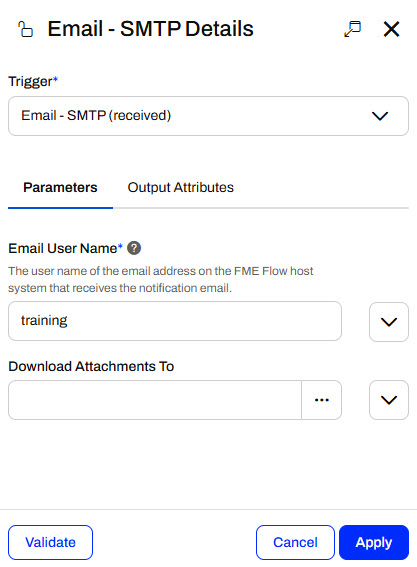
The Email User Name parameter does not need to be an existing user or email. When you add a username, you essentially create the email address in FME Flow's email server using the hostname as the email domain. In the above image, the Email User Name is "training"; you do not need to specify @FMEFlowHostname.com in the parameter. When you send an email, you would enter training@FMEFlowHostname.com or AuthoringCourse@FMEFlowIPAddress as the email you are sending to.
Creating an IMAP Trigger
The Email - IMAP (received) trigger has significantly more parameters to configure than the Email - SMTP trigger. Most of these parameters are for connecting to the IMAP email server and defining the events you would like the Automation to trigger in response to. Unlike the Email - SMTP trigger, which triggers directly when an email is received, the Email - IMAP trigger polls the email account at an interval and then sends messages for either new or unread emails.
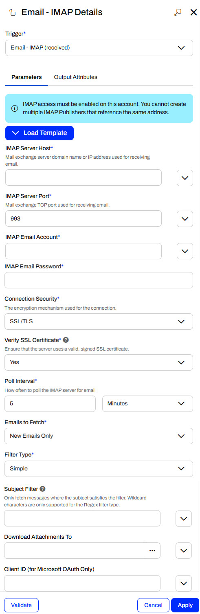
Again, the Download Attachments To parameter is optional. If you leave it blank, FME Flow temporarily stores the attachments in Resources.
Exercise

Sven, a planning analyst, regularly receives emails with building updates from contractors. These emails usually contain spatial data attachments to process. When Sven gets a dataset by email, he immediately downloads and transforms it into GeoJSON to easily and consistently reference the geometry.
Follow along with Sven's steps as he automates this process, ensuring files are immediately processed, transformed, and stored as soon as they are received. He has already created and published his workspace to FME Flow, trigger-workflows-with-email.fmw in the Planning repository.
1) Create a New Automation
Sven creates a new Automation on FME Flow.
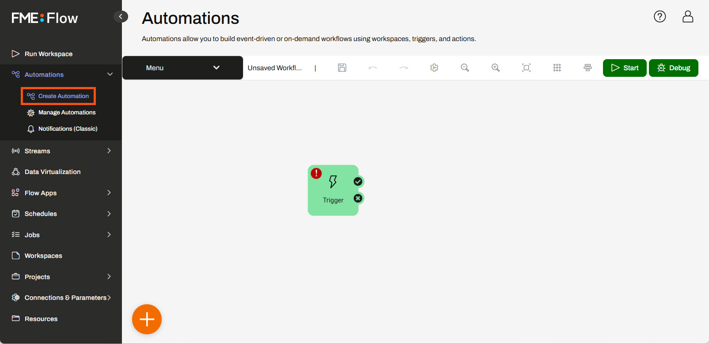
Sven opens the Trigger Details and selects the Email - SMTP (received) trigger. He sets the Email User Name to planning, which will be the local part of the email address. He clicks Validate to ensure his parameters are valid.
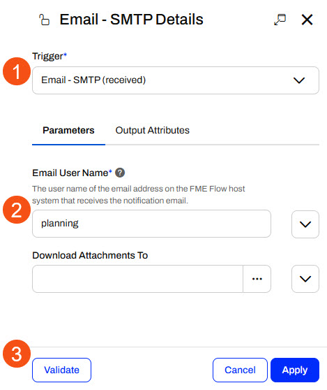
Before he closes the trigger details, he clicks the Output Attributes tab and inspects the Event Attributes for the Email - SMTP trigger. He will use the email.attachment attribute to reference the file in the following action.
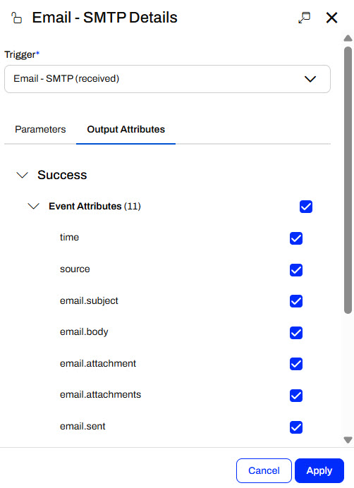
Sven clicks Apply to close the pane.

The SMTP protocol will only work if you use an instance of FME Flow with a proper DNS record (the FME Flow instance is accessible over the internet). If you are using any FME Flow Hosted instance or an FME Training machine, your FME Flow is configured so the SMTP protocol will work. If you are not using a publicaly accessible FME Flow, you may consider creating an Email - IMAP (received) trigger with your own email account instead. See Run a Workspace in Response to Incoming Email for more details.
3) Add Run a Workspace Action
Sven connects an internal action to the Email trigger's success port. He opens the Action Details and configures it to run the trigger-workflows-with-email.fmw workspace in the Planning repository.
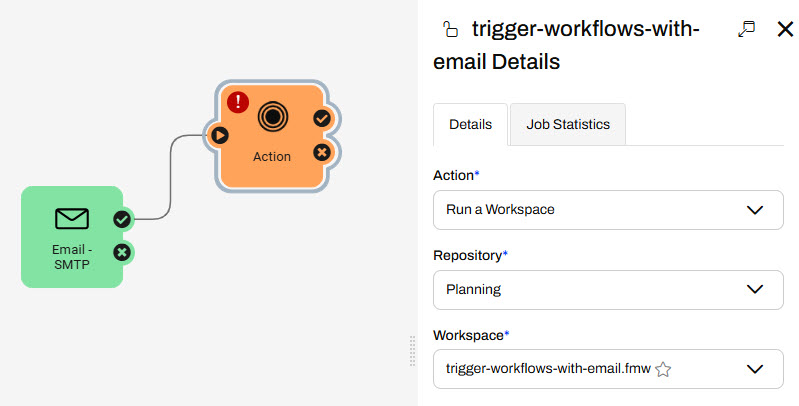
For the Source Esri Shapefile parameter, Sven selects Email Attachment in the Email section using the drop-down menu.
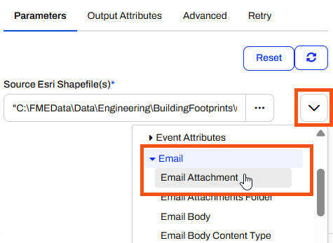
For the Destination GeoJSON File, Sven uses the ellipsis to select the Resources > Data > Output folder.
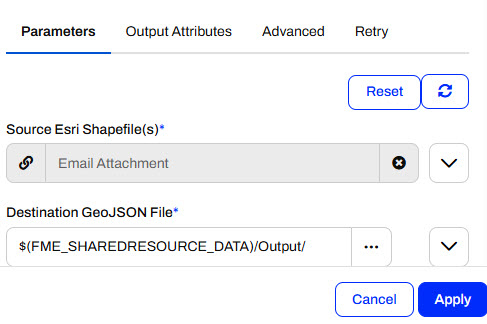
Sven clicks Apply to close the action details. His Automation has two nodes - the Email trigger and the Run a Workspace action.
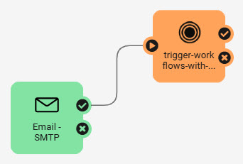
4) Start Automation
Sven saves his Automation as Planning Emails and clicks Start to begin running it. When FME Flow receives an email, it triggers the Automation and runs the workspace to process the attachments.
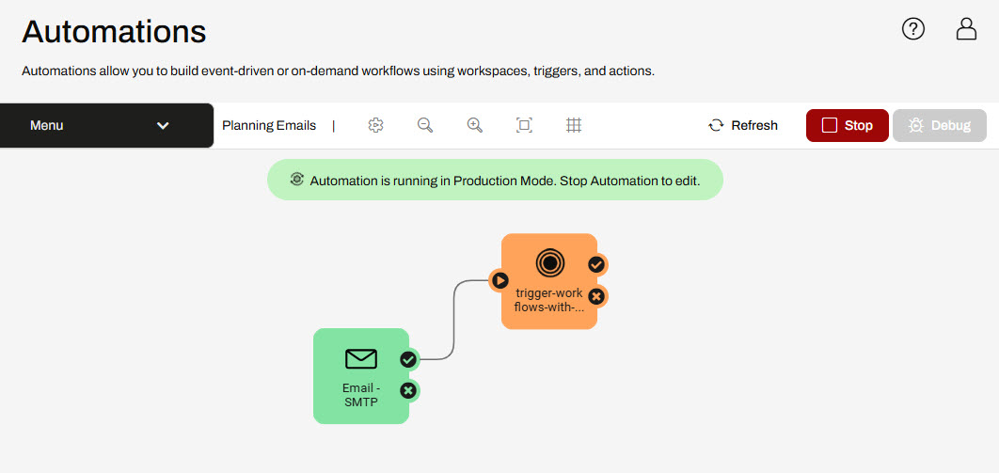
5) Send Email with Building Updates
Sven uses his email to test his Automation. He emails planning@FMEFlowIPAddress with the BuildingFootprints.zip (C:\FMEData\Data\Engineering\BuildingFootprints.zip) containing shapefiles as an attachment.
To send the email to FME Flow, you will need to use your own email account such as Gmail or Outlook.
He waits a few moments after sending the email and refreshes the Automation. The event count updates to show FME Flow received an email and sent a message to the workspace action to run.
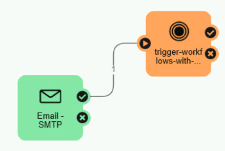
6) Check Jobs and Logs
Sven opens the Automations Menu options and selects View Log Files.
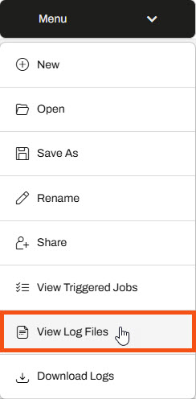
FME Flow opens the Automations logs in Resources/Logs/automations/current. Sven scrolls down, finds the trigger_email.log file, and opens it.
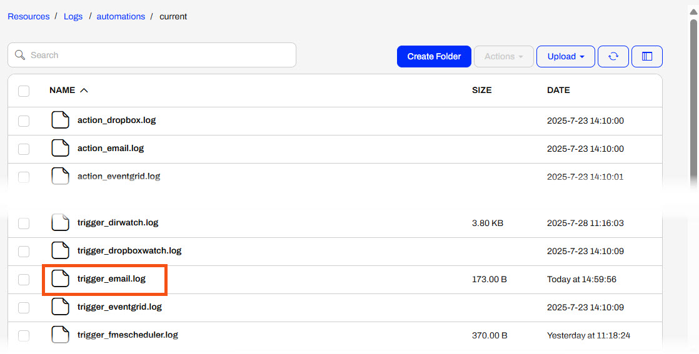
The log file shows that the trigger processed Sven's email and sent an event to the following action in the Automation.
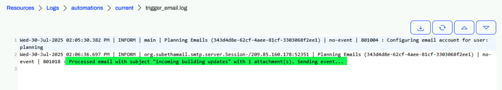
You can optionally view the fme_automations.log file or View Triggered Jobs from the Automations Menu to see the workspace translation, too. You may also navigate to the Resources location with the destination GeoJSON files processed by the workspace.
Sven has now created an Automation that triggers with incoming emails and processes the email attachments with a workspace. This saves Sven time and effort when processing the emails manually and also ensures the GeoJSON files are kept consistent and updated.